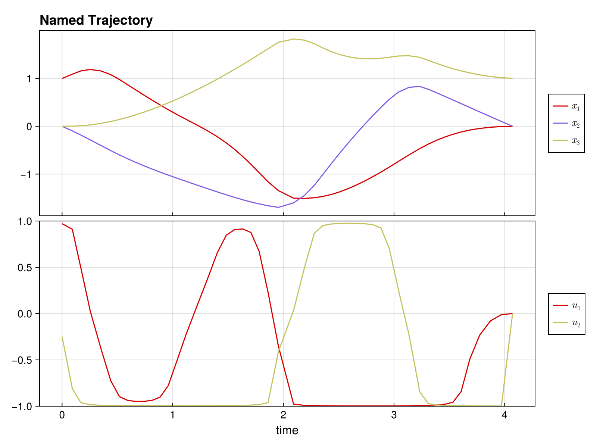

Complete Example: Time-Optimal Bilinear Control
This example demonstrates solving a time-optimal trajectory optimization problem with:
- Multiple control inputs with bounds
- Free time steps (variable Δt)
- Combined objective (control effort + minimum time)
using DirectTrajOpt
using NamedTrajectories
using LinearAlgebra
using CairoMakieProblem Setup
System: 3D oscillator with 2 control inputs
\[\dot{x} = (G_0 + u_1 G_1 + u_2 G_2) x\]
Goal: Drive from [1, 0, 0] to [0, 0, 1] minimizing ∫ ||u||² dt + w·T
Constraints: -1 ≤ u ≤ 1, 0.05 ≤ Δt ≤ 0.3
Define System Dynamics
G_drift = [
0.0 1.0 0.0;
-1.0 0.0 0.0;
0.0 0.0 -0.1
]
G_drives = [
[
1.0 0.0 0.0;
0.0 0.0 0.0;
0.0 0.0 0.0
],
[
0.0 0.0 0.0;
0.0 0.0 1.0;
0.0 1.0 0.0
],
]
G = u -> G_drift + sum(u .* G_drives)#2 (generic function with 1 method)Create Trajectory
N = 50
x_init = [1.0, 0.0, 0.0]
x_goal = [0.0, 0.0, 1.0]
x_guess = hcat([x_init + (x_goal - x_init) * (k/(N-1)) for k = 0:(N-1)]...)
traj = NamedTrajectory(
(x = x_guess, u = 0.1 * randn(2, N), Δt = fill(0.15, N));
timestep = :Δt,
controls = (:u, :Δt),
initial = (x = x_init,),
final = (x = x_goal,),
bounds = (u = 1.0, Δt = (0.05, 0.3)),
)N = 50, (x = 1:3, u = 4:5, → Δt = 6:6)Build and Solve Problem
integrator = BilinearIntegrator(G, :x, :u, traj)
obj = (QuadraticRegularizer(:u, traj, 1.0) + 0.5 * MinimumTimeObjective(traj, 1.0))
prob = DirectTrajOptProblem(traj, obj, integrator)
probDirectTrajOptProblem
Trajectory
Timesteps: 50
Duration: 7.35
Knot dim: 6
Variables: x (3), u (2), Δt (1)
Controls: u, Δt
Objective (2 terms)
1.0 * QuadraticRegularizer on :u (R = [1.0, 1.0], all)
0.5 * MinimumTimeObjective (D = 1.0)
Dynamics (1 integrators)
BilinearIntegrator: :x = exp(Δt G(:u)) :x (dim = 3)
Constraints (4 total: 2 equality, 2 bounds)
EqualityConstraint: "initial value of x"
EqualityConstraint: "final value of x"
BoundsConstraint: "bounds on u"
BoundsConstraint: "bounds on Δt"solve!(prob; max_iter = 50) initializing optimizer...
building evaluator: 1 integrators, 0 nonlinear constraints
dynamics constraints: 147, nonlinear constraints: 0
integrator 1 jacobian structure: 0.935s
jacobian structure: 1764 nonzeros (0.956s)
integrator 1 hessian structure: 0.017s
computing objective hessian structure (CompositeObjective)...
sub-objective 1 (QuadraticRegularizer): 0.31s
sub-objective 2 (MinimumTimeObjective): 0.007s
objective hessian structure: 0.367s
hessian structure: 2814 nonzeros (0.384s)
linear index maps built (0.004s)
evaluator ready (total: 1.465s)
evaluator created (1.938s)
NL constraint bounds extracted (0.025s)
NLP block data built (0.0s)
Ipopt optimizer configured (0.01s)
variables set (0.172s)
applying constraint: initial value of x
applying constraint: final value of x
applying constraint: bounds on u
applying constraint: bounds on Δt
linear constraints added: 4 (0.474s)
optimizer initialization complete (total: 2.645s)
******************************************************************************
This program contains Ipopt, a library for large-scale nonlinear optimization.
Ipopt is released as open source code under the Eclipse Public License (EPL).
For more information visit https://github.com/coin-or/Ipopt
******************************************************************************
This is Ipopt version 3.14.19, running with linear solver MUMPS 5.8.2.
Number of nonzeros in equality constraint Jacobian...: 1746
Number of nonzeros in inequality constraint Jacobian.: 0
Number of nonzeros in Lagrangian Hessian.............: 2748
Total number of variables............................: 294
variables with only lower bounds: 0
variables with lower and upper bounds: 150
variables with only upper bounds: 0
Total number of equality constraints.................: 147
Total number of inequality constraints...............: 0
inequality constraints with only lower bounds: 0
inequality constraints with lower and upper bounds: 0
inequality constraints with only upper bounds: 0
iter objective inf_pr inf_du lg(mu) ||d|| lg(rg) alpha_du alpha_pr ls
0 3.6858932e+00 1.49e-01 7.52e-02 0.0 0.00e+00 - 0.00e+00 0.00e+00 0
1 2.5953977e+00 1.30e-01 7.62e-01 -4.0 1.94e+00 - 1.61e-01 1.28e-01f 1
2 2.3567343e+00 1.18e-01 4.24e+00 -0.5 2.46e+00 - 3.32e-01 9.67e-02h 1
3 2.1127924e+00 1.05e-01 1.27e+01 -0.6 3.61e+00 0.0 3.08e-01 1.03e-01h 1
4 2.0329475e+00 9.39e-02 8.61e+01 -0.0 3.09e+00 0.4 9.07e-01 1.25e-01h 1
5 2.0492278e+00 8.79e-02 6.85e+01 0.2 4.92e+00 - 3.28e-01 7.95e-02h 1
6 2.0497171e+00 8.25e-02 8.73e+01 -4.0 2.75e+00 - 1.79e-01 5.68e-02h 1
7 2.1513838e+00 7.21e-02 1.27e+02 -0.6 2.73e+00 0.9 2.17e-01 1.20e-01h 1
8 2.1338924e+00 6.94e-02 4.34e+03 0.6 1.24e+00 2.2 1.00e+00 3.88e-02h 1
9 2.3299357e+00 6.81e-02 1.40e+04 2.4 2.21e+01 1.7 1.00e+00 1.62e-02f 1
iter objective inf_pr inf_du lg(mu) ||d|| lg(rg) alpha_du alpha_pr ls
10 2.5555648e+00 6.10e-02 1.26e+04 2.2 3.06e+00 - 1.42e-01 1.08e-01f 1
11 2.8549361e+00 4.96e-02 5.17e+03 2.4 2.81e+00 - 5.10e-01 2.01e-01f 1
12 3.0311515e+00 1.16e-01 4.41e+03 -3.7 1.07e+00 - 2.36e-01 1.00e+00h 1
13 3.0335118e+00 5.59e-03 6.77e+02 1.5 2.50e-01 2.1 8.61e-01 1.00e+00f 1
14 3.0394234e+00 4.29e-04 4.70e+01 0.2 5.87e-02 1.7 9.91e-01 1.00e+00f 1
15 3.0393337e+00 5.97e-06 3.37e-01 -1.6 3.44e-03 1.2 9.94e-01 1.00e+00h 1
16 2.8835715e+00 6.20e-02 2.09e-01 -1.7 9.80e-01 - 7.02e-01 1.00e+00f 1
17 2.6979489e+00 2.94e-02 8.01e-02 -2.2 4.07e-01 - 8.46e-01 1.00e+00h 1
18 2.4785033e+00 1.50e-02 3.90e-02 -2.6 6.76e-01 - 9.48e-01 1.00e+00h 1
19 2.4687198e+00 6.68e-04 2.47e-01 -2.9 4.10e-02 0.7 8.52e-01 1.00e+00h 1
iter objective inf_pr inf_du lg(mu) ||d|| lg(rg) alpha_du alpha_pr ls
20 2.4560325e+00 2.85e-04 3.59e-02 -3.6 2.15e-02 0.2 1.00e+00 1.00e+00h 1
21 2.4322026e+00 1.25e-04 2.88e-02 -4.0 5.04e-02 -0.3 1.00e+00 7.40e-01h 1
22 2.4028892e+00 2.52e-04 1.94e-02 -4.0 1.02e-01 -0.7 1.00e+00 5.01e-01h 1
23 2.3788102e+00 2.93e-04 1.28e-02 -4.0 1.77e-01 -1.2 1.00e+00 2.79e-01h 1
24 2.3614413e+00 1.87e-04 1.04e-02 -4.0 6.55e-02 -0.8 1.00e+00 6.54e-01h 1
25 2.3438051e+00 2.22e-04 8.26e-03 -4.0 1.45e-01 -1.3 1.00e+00 3.95e-01h 1
26 2.3243541e+00 7.88e-04 7.16e-03 -4.0 3.59e-01 -1.7 1.00e+00 3.26e-01h 1
27 2.3134264e+00 5.91e-04 5.08e-03 -4.0 1.21e-01 -1.3 1.00e+00 6.63e-01h 1
28 2.3034982e+00 7.92e-04 4.03e-03 -4.0 2.52e-01 -1.8 1.00e+00 3.87e-01h 1
29 2.2934174e+00 3.19e-03 4.43e-03 -4.0 6.56e-01 -2.3 1.00e+00 3.34e-01h 1
iter objective inf_pr inf_du lg(mu) ||d|| lg(rg) alpha_du alpha_pr ls
30 2.2857917e+00 9.70e-04 2.22e-03 -4.0 1.52e-01 -1.8 1.00e+00 7.77e-01h 1
31 2.2792828e+00 2.41e-03 1.84e-03 -4.0 3.12e-01 -2.3 1.00e+00 7.99e-01h 1
32 2.2784324e+00 2.77e-03 4.52e-03 -4.0 4.17e-01 -2.8 1.00e+00 2.04e-01h 1
33 2.2780600e+00 1.02e-02 8.60e-03 -4.0 8.63e-01 - 9.89e-01 4.29e-01h 1
34 2.2762997e+00 2.92e-03 1.30e-03 -4.0 1.67e-01 - 1.00e+00 1.00e+00h 1
35 2.2761373e+00 2.34e-03 1.35e-03 -4.0 1.45e-01 - 1.00e+00 1.00e+00h 1
36 2.2756337e+00 5.11e-03 3.08e-03 -4.0 1.67e-01 -2.4 1.00e+00 1.00e+00h 1
37 2.2756517e+00 6.13e-04 7.63e-04 -4.0 6.54e-02 -1.9 1.00e+00 1.00e+00h 1
38 2.2754859e+00 1.18e-03 1.26e-03 -4.0 1.98e-01 -2.4 1.00e+00 3.21e-01h 2
39 2.2754130e+00 1.71e-03 3.52e-03 -4.0 2.98e-01 - 1.00e+00 2.45e-01h 2
iter objective inf_pr inf_du lg(mu) ||d|| lg(rg) alpha_du alpha_pr ls
40 2.2753042e+00 2.20e-04 1.23e-03 -4.0 1.35e-01 - 1.00e+00 1.00e+00H 1
41 2.2751926e+00 5.09e-05 3.85e-05 -4.0 3.19e-02 - 1.00e+00 1.00e+00h 1
42 2.2751890e+00 2.37e-07 1.54e-07 -4.0 2.06e-03 - 1.00e+00 1.00e+00h 1
43 2.2751890e+00 5.70e-12 3.47e-12 -4.0 1.01e-05 - 1.00e+00 1.00e+00h 1
Number of Iterations....: 43
(scaled) (unscaled)
Objective...............: 2.2751889659277582e+00 2.2751889659277582e+00
Dual infeasibility......: 3.4706098129937135e-12 3.4706098129937135e-12
Constraint violation....: 5.7041038559191293e-12 5.7041038559191293e-12
Variable bound violation: 0.0000000000000000e+00 0.0000000000000000e+00
Complementarity.........: 1.0000000017061041e-04 1.0000000017061041e-04
Overall NLP error.......: 5.7041038559191293e-12 5.7041038559191293e-12
Number of objective function evaluations = 51
Number of objective gradient evaluations = 44
Number of equality constraint evaluations = 51
Number of inequality constraint evaluations = 0
Number of equality constraint Jacobian evaluations = 44
Number of inequality constraint Jacobian evaluations = 0
Number of Lagrangian Hessian evaluations = 43
Total seconds in IPOPT = 9.719
EXIT: Optimal Solution Found.Visualize Solution
plot(prob.trajectory) # See NamedTrajectories.jl documentation for plotting options
Analyze Solution
x_sol = prob.trajectory.x
u_sol = prob.trajectory.u
Δt_sol = prob.trajectory.Δt
println("Solution found!")
println(" Total time: $(sum(Δt_sol)) seconds")
println(" Δt range: [$(minimum(Δt_sol)), $(maximum(Δt_sol))]")
println(" Max |u₁|: $(maximum(abs.(u_sol[1,:])))")
println(" Max |u₂|: $(maximum(abs.(u_sol[2,:])))")
println(" Final error: $(norm(x_sol[:,end] - x_goal))")Solution found!
Total time: 4.246171920568584 seconds
Δt range: [0.07285796422410984, 0.175]
Max |u₁|: 0.9967728853584722
Max |u₂|: 0.9979498454886797
Final error: 0.0Key Insights
Free time optimization: Variable Δt allows the optimizer to adjust trajectory speed, with shorter steps where control is needed and longer steps in smooth regions.
Control bounds: With time weight 0.5, controls don't fully saturate. Increase the weight to push toward bang-bang control.
Combined objectives: The + operator makes it easy to balance multiple goals.
Exercises
1. Bang-bang control: Set time weight to 5.0 - do controls saturate the bounds?
2. Fixed time: Remove Δt from controls and compare total time.
3. Add waypoint: Require passing through [0.5, 0, 0.5] at the midpoint:
constraint = NonlinearKnotPointConstraint(
x -> x - [0.5, 0, 0.5], :x, traj;
times=[div(N,2)], equality=true
)
prob = DirectTrajOptProblem(traj, obj, integrator; constraints=[constraint])4. Different goal: Try reaching [0, 1, 0] or [0.5, 0.5, 0.5]
5. Tighter bounds: Use bounds=(u = 0.5, Δt = (0.05, 0.3)) - how does time change?
This page was generated using Literate.jl.